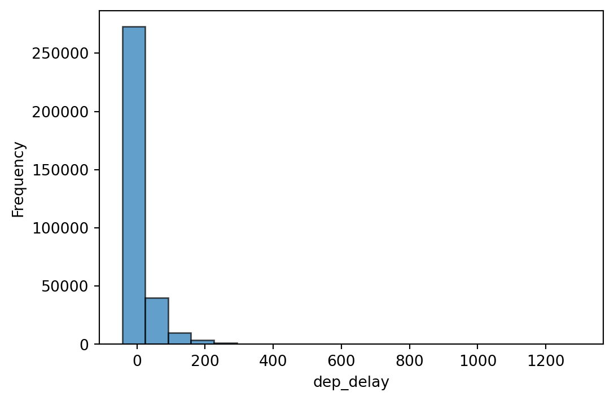
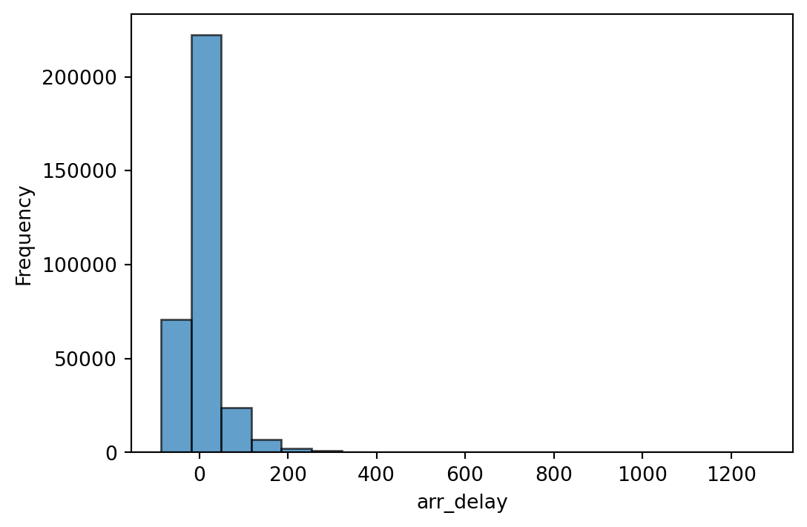
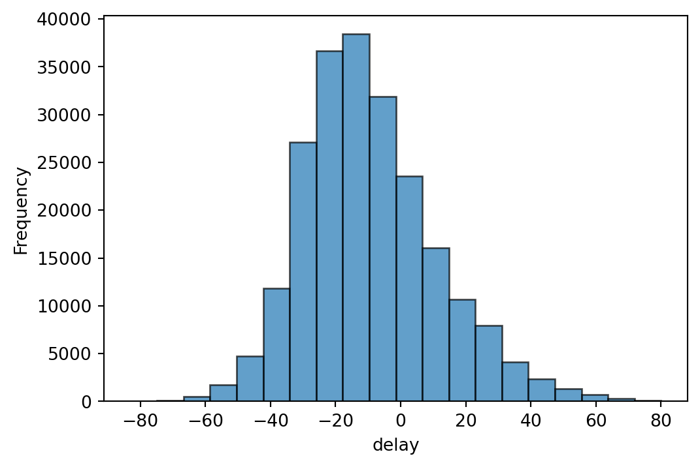
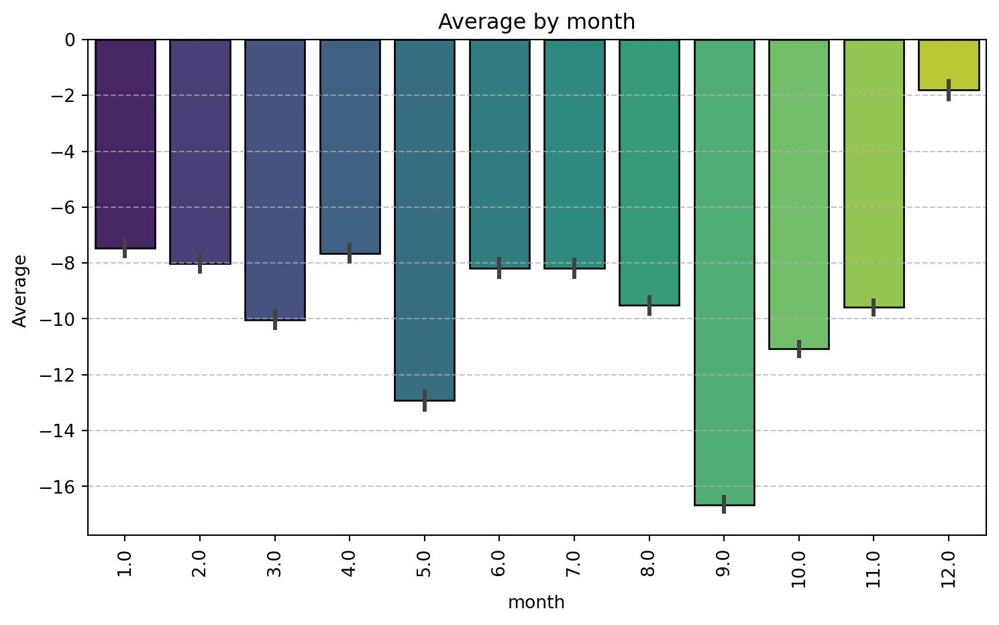
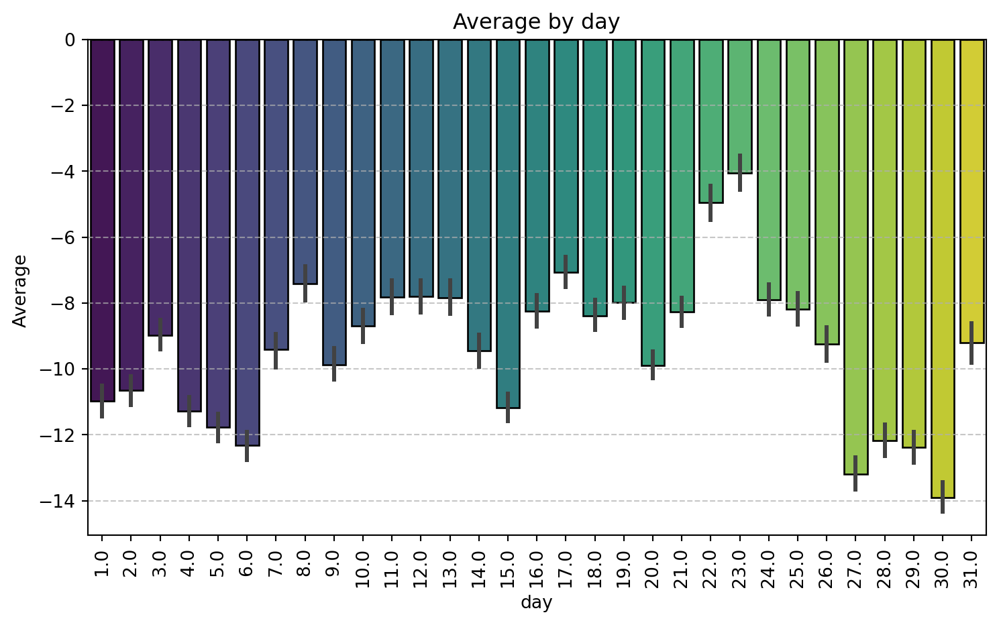
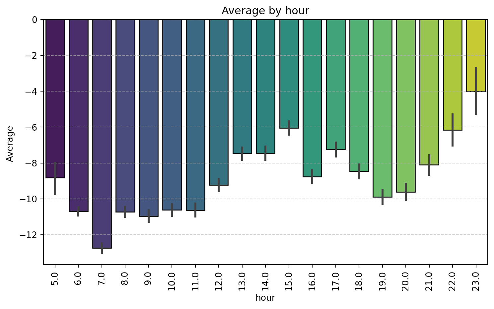

<class 'pandas.core.frame.DataFrame'>
RangeIndex: 336776 entries, 0 to 336775
Data columns (total 19 columns):
# Column Non-Null Count Dtype
--- ------ -------------- -----
0 year 336776 non-null int64
1 month 336776 non-null int64
2 day 336776 non-null int64
3 dep_time 328521 non-null float64
4 sched_dep_time 336776 non-null int64
5 dep_delay 328521 non-null float64
6 arr_time 328063 non-null float64
7 sched_arr_time 336776 non-null int64
8 arr_delay 327346 non-null float64
9 carrier 336776 non-null object
10 flight 336776 non-null int64
11 tailnum 334264 non-null object
12 origin 336776 non-null object
13 dest 336776 non-null object
14 air_time 327346 non-null float64
15 distance 336776 non-null int64
16 hour 336776 non-null int64
17 minute 336776 non-null int64
18 time_hour 336776 non-null object
dtypes: float64(5), int64(9), object(5)
memory usage: 48.8+ MBNew York Flight Data Analysis
sub title
TEAM EE
about TEAM
박수현 이주형 오윤지 조익현
NYC flights data 를 알아보자!
nycflights13 - flights, planes
flights.info()
planes.info()
<class 'pandas.core.frame.DataFrame'>
RangeIndex: 3322 entries, 0 to 3321
Data columns (total 9 columns):
# Column Non-Null Count Dtype
--- ------ -------------- -----
0 tailnum 3322 non-null object
1 year 3252 non-null float64
2 type 3322 non-null object
3 manufacturer 3322 non-null object
4 model 3322 non-null object
5 engines 3322 non-null int64
6 seats 3322 non-null int64
7 speed 23 non-null float64
8 engine 3322 non-null object
dtypes: float64(2), int64(2), object(5)
memory usage: 233.7+ KB우리의 주제
flights(airtime) 칼럼과 planes(seats) 칼럼은 무슨 관계일까?
delay(arr_delay, dep_delay)는 어떨 때 많이 생길까?
비행기 제조년도 별 지연시간 확인.
month 와 delay 확인.
데이터 확인
지연시간에 이상치가 있다!


| Statistic | Value |
|---|---|
| count | 327346.000000 |
| mean | 6.895377 |
| std | 44.633292 |
| min | -86.000000 |
| 25% | -17.000000 |
| 50% | -5.000000 |
| 75% | 14.000000 |
| max | 1272.000000 |
| Name: arr_delay |
전처리
planes와 flights 데이터를 left join
전처리 후 지연시간(delay) 히스토그램



month, day, hour 변수와 delay 간 시각화



나머지 범주형 변수와 delay 간 시각화
프린트 함수
📌 Grouped statistics by 'month':
mean median count std
month
1.0 -7.469175 -10.0 18102 20.008805
2.0 -8.022157 -10.0 15977 20.310522
3.0 -10.042049 -12.0 18431 20.374969
4.0 -7.649370 -10.0 18347 21.040970
5.0 -12.926045 -15.0 18660 20.817733
6.0 -8.177766 -11.0 16578 20.709426
7.0 -8.182657 -11.0 17021 21.621459
8.0 -9.509452 -12.0 19256 21.172983
9.0 -16.654730 -19.0 19938 18.682653
10.0 -11.067273 -13.0 20989 18.756338
11.0 -9.580393 -12.0 19952 18.750315
12.0 -1.802654 -4.0 16955 21.549482
--------------------------------------------------
📌 Grouped statistics by 'day':
mean median count std
day
1.0 -10.984823 -13.0 7050 21.062430
2.0 -10.654838 -13.0 7017 20.037977
3.0 -8.982829 -11.0 7629 20.329292
4.0 -11.279702 -13.0 8055 19.914976
5.0 -11.779650 -14.0 7715 19.545442
6.0 -12.326953 -14.0 7732 19.966093
7.0 -9.410120 -12.0 6976 21.461228
8.0 -7.407017 -10.0 6356 21.774851
9.0 -9.869940 -13.0 6620 20.767830
10.0 -8.703842 -12.0 6716 20.990988
11.0 -7.814482 -11.0 7002 20.829917
12.0 -7.790437 -10.0 6881 21.057658
13.0 -7.841904 -10.0 7078 22.075775
14.0 -9.446109 -12.0 7543 21.553101
15.0 -11.170115 -13.0 8024 19.325104
16.0 -8.242717 -11.0 7655 20.206379
17.0 -7.070330 -10.0 7280 20.889677
18.0 -8.384332 -11.0 7327 20.119238
19.0 -7.991234 -10.0 6959 20.012300
20.0 -9.892592 -12.0 7681 19.341606
21.0 -8.274919 -11.0 7675 19.483318
22.0 -4.954383 -8.0 6730 21.007776
23.0 -4.063287 -7.0 6747 20.850789
24.0 -7.898216 -10.0 7005 19.884979
25.0 -8.189465 -11.0 7062 20.904726
26.0 -9.251889 -12.0 7412 20.538864
27.0 -13.196399 -16.0 7332 20.507918
28.0 -12.174813 -15.0 6813 20.302421
29.0 -12.379115 -15.0 6895 19.723476
30.0 -13.897461 -16.0 7012 19.967086
31.0 -9.204873 -11.0 4227 19.431841
--------------------------------------------------
📌 Grouped statistics by 'hour':
mean median count std
hour
5.0 -8.816176 -11.0 1496 17.674509
6.0 -10.687294 -12.0 19747 17.209510
7.0 -12.738224 -15.0 17748 18.636493
8.0 -10.724119 -13.0 20121 19.519045
9.0 -10.964727 -13.0 15536 20.263718
10.0 -10.613081 -13.0 12553 19.722812
11.0 -10.633679 -13.0 10701 19.114769
12.0 -9.225668 -12.0 12093 19.219580
13.0 -7.475078 -10.0 13402 19.933975
14.0 -7.452344 -10.0 13671 20.843547
15.0 -6.042357 -9.0 13693 21.622440
16.0 -8.766569 -11.0 13670 22.080245
17.0 -7.240093 -10.0 13374 22.749715
18.0 -8.467556 -11.0 12375 23.320701
19.0 -9.895800 -12.0 11977 22.855508
20.0 -9.620476 -12.0 9670 22.432213
21.0 -8.096303 -11.0 5815 21.309996
22.0 -6.160604 -10.0 1787 18.904115
23.0 -4.011583 -6.0 777 18.451556
--------------------------------------------------전체 히트맵
flights(air_time) 칼럼과 planes(seats) 칼럼은 무슨 관계일까?
비행시간과 좌석수 상관계수의 관계
flights(air_time)-planes(seats)
- +0.54의 상관계수를 갖는다. => 비교적 강한 상관계수를 가진다.
- seat(좌석수)가 많은수록 비행시간이 길다.
- 큰 비행기 일 수록 비행 시간이 길다.
flights(air_time)-flights(distance)
- +0.52의 상관계수를 갖는다. => 비교적 강한 상관계수를 가진다.
- seat(좌석수)가 많을수록 목적지까지의 거리가 길다.
- 큰 비행기일수록 목적지까지의 거리가 길다.
air_time과 seats/distance 상관관계 시각화
air_time-seats의 관계
비행시간(air_time)과 좌석 수(seats)의 관계 시각화 코드
- seats 변수는 대부분 100~200 사이에 집중
- 대부분의 항공기가 중형 크기로 설계되었음
- 좌석 수가 많을수록 비행 시간이 길어지는 경향이 관찰됨
- 속도가 높은 항공기는 비행 시간이 짧거나 특정 좌석 수에 집중되어 있음
- seats와 air_time: 상관계수 +0.52로, 좌석 수가 많을수록 비행 시간이 길어지는 경향이 있습니다.
flights(distance)-flights(seats)의 관계
비행거리와 좌석 수의 관계 시각화 코드
둘 사이의 관계
비행기의 구조적인 측면 멀리 가려면 연료가 많이 필요하다. 연료통이 큰 비행기가 필요하다. 큰 비행기는 좌석수가 많다.
규모의 경제 측면 같은 돈을 내더라도 사람 수가 많으면 멀리갈 수 있다.
지연시간(delay)과 관계가 있는 칼럼은 무엇인가?
비행기 제조년도와 지연시간 관계
날씨와 지연시간 관계
최종 결론
Conclusion
- airtime이 길어질 수록 시트 수가 많다. 즉 이동한다.

LS Big Data School EE